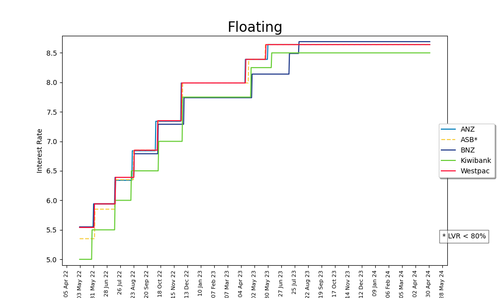

Charts below are daily snapshots of the walk-in interest rate for each of the main banks (92% of mortgage market) in New Zealand over the last 2 years. Tables show the rates as dated.
Rates in bold are the lowest rate for that fixed loan term/floating rate. 'LVR < 80%' (rates requiring minimum of 80% equity on the property).
ASB are the only bank matching the lowest 'LVR < 80%' rates across all term rates, closely followed by BNZ.